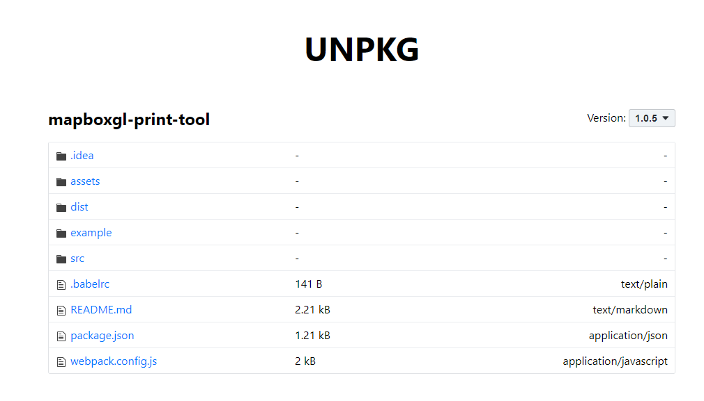
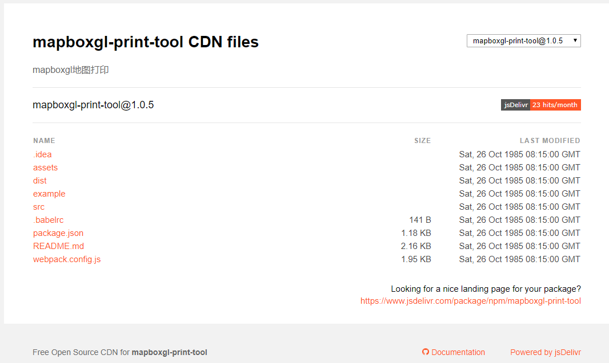
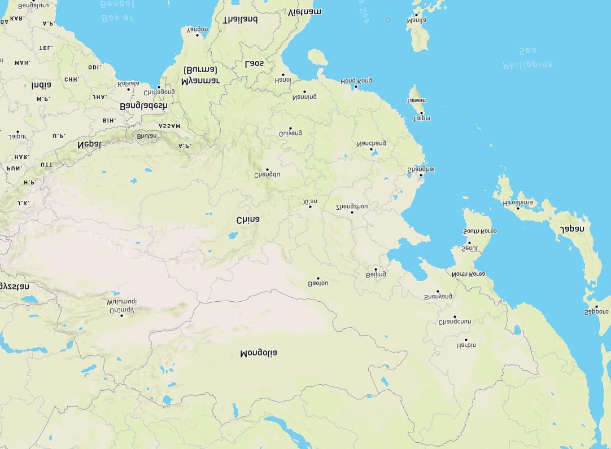
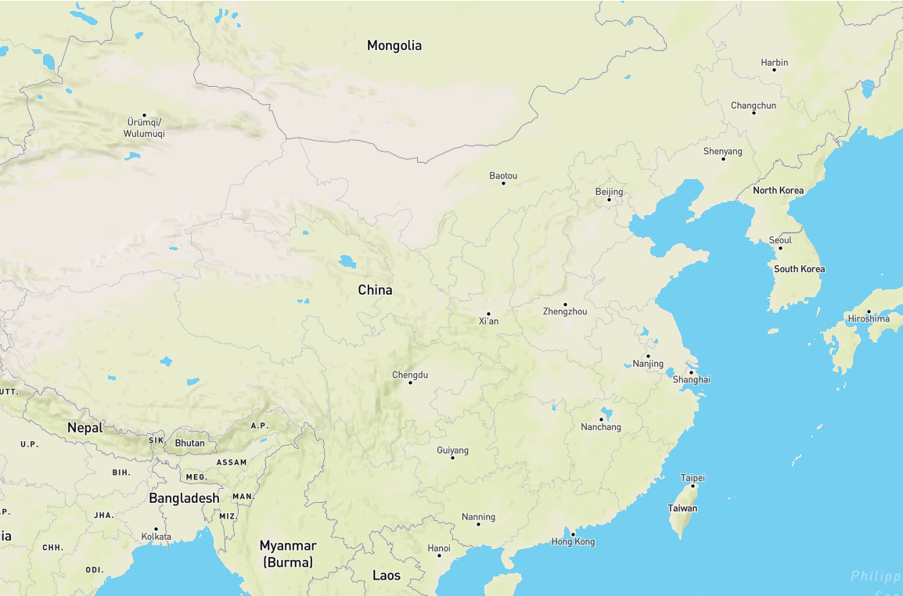

mapboxgl-print-tool 是 1.0.5 版本
mapboxgl-measure-tool 是 1.0.6 版本
介绍
在发布 mapboxgl-print-tool 和 mapboxgl-measure-tool 的过程中遇到了各种问题，毕竟是第一次发布npm包，具体怎么弄也都是网上搜各种博客看到的，也许适用当时他们的，但或许版本或者环境的原因不适合我现在的。
所以在这记录一下这几天遇到的问题和对应解决办法
npm
- npm初始化
- 注册自己的npm账号
- 项目创建一个仓库，我一般都是在
github上创建。之后把git地址在本地下载之后，运行 npm init 开始初始化
- npm发布注意
1、要支持CommonJS模块化规范，所以要求打包后的最后结果也遵守该规则。
2、Npm模块使用者的环境是不确定的，很有可能并不支持ES6，所以打包的最后结果应该是采用ES5编写的。并且如果ES5是经过转换的，请最好连同SourceMap一同上传。
3、Npm包大小应该是尽量小（有些仓库会限制包大小）
4、发布的模块不能将依赖的模块也一同打包，应该让用户选择性的去自行安装。这样可以避免模块应用者再次打包时出现底层模块被重复打包的情况。
5、UI组件类的模块应该将依赖的其它资源文件，例如.css文件也需要包含在发布的模块里。 webpack基本配置
因为npm包是有依赖，鉴于npm打包注意第4条，需要在webpack中使用
externals进行配置来告诉webpack哪些模块不需要打包
在实际开发中，虽然配置了externals但是打包之后使用时，遇到了 Can`t resolve ‘FileSaver’ in XXXX 。
针对上面问题，找到了一篇文章介绍的方法然后结合webpack文档，可以解决问题。
相关文章 Webpack构建library时的踩坑经历 和 webpack外部扩展(externals)最后配置：
Javascript1
2
3
4
5
6
7
8
9
10
11
12
13
14
15
16
17
18
19// // npm原则， 不同模块 使用不同依赖，root为浏览器环境下
externals: {
"file-saver":{
commonjs:"file-saver",
commonjs2:'file-saver',
amd:"file-saver",
root:'FileSaver'
},
"mapbox-gl":{
commonjs:"mapbox-gl",
commonjs2:'mapbox-gl',
amd:"mapbox-gl",
root:"mapboxgl"
}
}
// 文件引用使用:
const FileSaver = require('file-saver')
const mapboxgl = require('mapbox-gl')npm版本更新
在用 npm publish 发布的时候 需要注意几点
发布前需要登录，npm login 填写自己的账号密码和邮箱
需要把地址改为npm官方库，如果是淘宝或者其它的npm镜像，是发布不通过。
Code1
2// 设置命令
npm config set registry https://registry.npmjs.org每次发布的版本号都是要比上一次大，同样的版本发布不通过
cdn 访问地址预览
- 发布之后可以在unpkg查看 查看方式 https://unpkg.com//:package@:version/:file , 比如查看mapboxgl-print-tool中文件
https://unpkg.com/browse/mapboxgl-print-tool@1.0.5/
- cdn查看 我使用的是jsDelivr 查看方式 https://cdn.jsdelivr.net/npm/package@version/file , 例如：https://cdn.jsdelivr.net/npm/mapboxgl-print-tool@1.0.5/

- 发布之后可以在unpkg查看 查看方式 https://unpkg.com//:package@:version/:file , 比如查看mapboxgl-print-tool中文件
mapboxgl-print-tool工具框选要点
因为mapboxgl使用的是webgl渲染，所以它渲染的比较快。而在对webgl裁剪时，不能像canvas的二维那来操作，这里我是参照webgl 读取canvas 像素来实现的
根据框选的范围，拿到屏幕上对应的起始点坐标，计算出宽 width 高 height，然后创建
canvas设置其宽高为计算出的宽高Javascript1
2
3
4
5
6// bbox 为框选的范围
const width = bbox[1].x - bbox[0].x
const height = bbox[1].y - bbox[0].y
let oCanvas = document.createElement("canvas")
oCanvas.width= width
oCanvas.height= height根据地图获取webgl对象
Javascript1
2// 获取webgl
const gl = this.map.getCanvas().getContext('webgl',{preserveDrawingBuffer:true})从webgl中读取像素，然后放入到新的canvas中
Javascript1
2
3
4
5
6
7
8
9// 建立像素集合
const pixels = new Uint8Array( width*height*4);
// 从缓冲区读取像素数据，然后将其装到事先建立好的像素集合里
gl.readPixels(bbox[0].x, bbox[0].y, width, height, gl.RGBA, gl.UNSIGNED_BYTE, pixels);
// 基于像素集合和尺寸建立ImageData 对象
const imageData= new ImageData(new Uint8ClampedArray(pixels),width,height);
// 放入新的canvas中
const oCtx = oCanvas.getContext("2d");
oCtx.putImageData(imageData, 0, 0);翻转处理。不知道什么原因，前3步得出来的结果，像素值是倒立的。所以需要对得到的结果进行竖向翻转。
处理代码:
Javascript1
2
3
4
5
6
7
8
9
10
11
12
13
14
15
16
17
18
19
20
21
22
23
24// 需要竖向翻转
let newData = oCtx.createImageData(width,height)
let soureData = oCtx.getImageData(0,0,width,height)
const turnNewData = this.imageDataVRevert(soureData,newData)
// 翻转之后放入canvas中
oCtx.putImageData( turnNewData, 0, 0);
/** 由于裁剪的内容是倒立的 因此需要翻转像素
* canvas像素竖向翻转
* @param sourceData
* @param newData
* @returns {*}
*/
imageDataVRevert (sourceData,newData) {
for(let i=0,h=sourceData.height;i<h;i++){
for(let j=0,w=sourceData.width;j<w;j++){
newData.data[i*w*4+j*4+0] = sourceData.data[(h-i)*w*4+j*4+0];
newData.data[i*w*4+j*4+1] = sourceData.data[(h-i)*w*4+j*4+1];
newData.data[i*w*4+j*4+2] = sourceData.data[(h-i)*w*4+j*4+2];
newData.data[i*w*4+j*4+3] = sourceData.data[(h-i)*w*4+j*4+3];
}
}
return newData;
}未做处理之前:

处理之后:

最后根据处理之后的canvas，转成图片打印输出
Javascript1
2
3
4
5
6
7
8
9saveAsIMG (canvas) {
if (navigator.msSaveBlob) {
navigator.msSaveBlob(canvas.msToBlob(), this.options.fileName);
} else {
canvas.toBlob((blob) => {
saveAs(blob, this.options.fileName);
});
}
}
hexo自带渲染模板
HTML写法
html1
2
3
4
5
6<div class="note default">default</div>
<div class="note primary">primary</div>
<div class="note success">success</div>
<div class="note info">info</div>
<div class="note warning">warning</div>
<div class="note danger">danger</div>{ } 写法
Code1
{% note danger %}note danger danger endnote {% endnote %}
效果
default
primary
success
info
warning
danger
note danger danger endnote


{kind=link}
{kind=link}
{kind=link}
{kind=link}